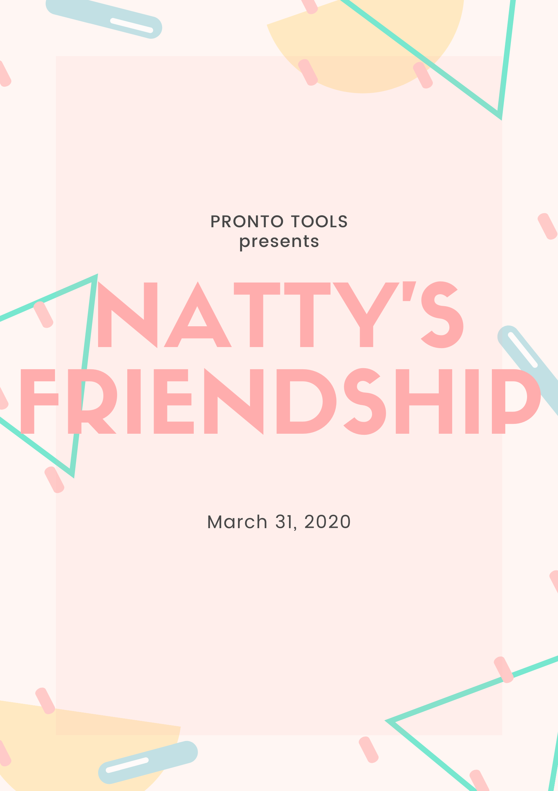

Name : Nattaphon Bunsuwan
สวัสดีนะครับ พี่เก๋ เรียกว่ามาทำงานไม่ค่อยได้พูดคุยอะไรกับพี่เก๋เยอะเลย หาตัวพี่เก๋ ไม่ค่อยจะเจอ และคือพีคสุดมี ซิงค์ intern กับพี่เก๋ครั้งเดียวและครั้งสุดท้ายจบเลยฮ่าๆๆ แต่ต้องขอบคุณพี่เก๋เลยนะเป็นคนมีไฟไอเดียพรุ่งพล้าน พูดตรงๆ คอยสนับสนุนคนอื่น ๆ และยังเป็นคนสอน scrum ผมตั้ง 3 รอบที่ได้เรียนกับพี่เก๋ มาถึงวันนี้ก็ขอบคุณมากๆ นะครับ
page 3.2

Dear, P' Natty
สวัสดีพี่เก๋ นี่ข้าวตูเองงง ขอบคุณพี่มากๆ ที่สอนการทำงานตลอดที่ฝึกงานมา ขอบคุณที่พี่ดูแลข้าวตูมา ถึงเราจะไม่ค่อยได้เจอกัน แต่เวลาเจอกันที พี่สอนอะไรหลายๆ อย่างให้ข้าวตูเยอะมาก รู้สึก skill ทำงานเป็นทีมเพิ่มสูงมากก ขอบคุณที่พี่คอยดุ เวลาทำงานไม่ดี 🙏 โชคดีนะพี่เก๋ พี่เก่งมากกกกก ข้าวตูชื่นชมพี่มากๆ นะ
Kaotu 🌚

จากใจหน่องปอยถึงพี่เก๋

ถึง พี่เก๋
สวัสดีค่ะ พี่เก๋ เราได้ 1:1 กันครั้งเดียวเอง หนูยังจำประโยคนึงได้ว่า "จำไว้เลยนะ พอได้มาทำงานที่นี่ แล้วออกไปทำงานที่อื่น ก็จะรู้สึกขัดใจ" ประโยคนี้พี่เก๋พูดตอนสอน Agile Scrum & Automate Test ซึ่ง หนูคิดว่า มันต้องเป็นอย่างนั้นแน่ๆ เลย ในอนาคต รู้สึกดีใจและเป็นเกียรติมากๆ ค่ะ ที่ได้เรียน Agile กับพี่เก๋ ขอบคุณสำหรับความรู้และประสบการณ์หลายๆ อย่างนะคะ
N'Mild 🌻

สวัสดีครับพี่เก๋
🍩🍩🍩🍩 Nat 🍩🍩🍩🍩

A little message from Bumbim
♥︎
ก่อนอื่นเลยต้องบอกว่าโอกาสได้คุยกับพี่เก๋น้อยมากๆค่ะ ถึงแม้จะไม่ค่อยมีโอกาสเหล่านั้น แต่ก็รู้ได้ว่าพี่เก๋เป็นห่วงน้องๆทุกคน จากทุกครั้งที่ได้ฟังพี่เก๋เล่าบางอย่างค่ะ เสียดายมากๆตรงที่มาถึง Pronto Tools แต่ไม่ได้ทำเวิร์คช็อป Agile กับพี่เก๋ หวังว่าจะมีโอกาสในอนาคตค่ะ ยินดีมากๆที่ได้เข้ามาเป็นส่วนหนึ่งของทีม และได้รู้จักพี่เก๋นะคะ :)
To, P' Natty 💋
พี่เก๋~ ขอบคุณพี่เก๋สำหรับทุกอย่างนะคะ พี่เก๋เป็นคนที่พูดเก่งมาก
เวลาพูดแล้วชวนเชื่อง่าย5555 ได้เรียนรู้อะไรหลายๆ อย่างจากพี่เก๋เลย ทั้ง hard skill
และ soft skill ขอบคุณมากๆ ค่า 👍
n' praew 🦊

To... P'Natty 💄
พี่เก๋ ขอบคุณที่ให้โอกาส ได้ร่วมงานกับทีมน่ารักๆ แบบ Pronto tools นะคะ ทำงานใน
environment ที่มี Dev ผญ เยอะขนาดนี้ เป็นฟิลที่ดีมากเลย พี่เป็น coach ที่สุดยอดมาก
เพราะเป็น scrum master มันไม่ง่ายเลย ขอบคุณที่คอยสร้าง culture แล้วนำพา mindset
ให้ทีม ได้ทำงานเป็น team work แบบนี้ค่ะ Respect ค่าาา
from... Pan


From Thohirah...
การเดินทางของเราต่อจากนี้จะเป็นอย่างไรไม่มีใครรู้ได้เลย แต่ที่หนูรู้คือ จากประสบการณ์ที่ผ่าน ที่ได้เรียนรู้ ทำให้หนูรู้สึกแข็งแรง ถ้าย้อนกลับไปได้ทุกครั้งที่เกิดปัญหา ทุกครั้งที่จัดการตัวเองไม่ได้ หนูจะขอเจอกับปัญหาเหล่านั้น เพื่อที่จะได้รู้ว่า พี่สอนเราให้เข้มแข็งได้อย่างไร ไม่ว่าจะเกิดอะไรขึ้นเราต้องประกอบร่างและกลับมาเข้มแข็งอย่างรวดเร็วอย่างไร รักพี่แบบไม่รู้จะอธิบายยังไง พี่ทำให้แปลกใจเสมอว่าคนตัวเล็กๆ จัดการทุกอย่างและทุกปัญหานี้ได้อย่างไร สิ่งที่พี่มอบให้พวกเราทุกคนคือโอกาสและพลัง ขอบคุณสำหรับทุกอย่างที่ตักเตือนและสอนเรา เพียงแค่ถ้าพี่ไม่ได้หยิบยื่นโอกาส กลับมา หนูคงไม่ได้มายืนอยู่ตรงนี้เลย รักพี่มากนะ ❤️
To my beloved siter,
Natty
To, P' Natty
พี่เก๋ ขอบคุณนะครับที่ให้โอกาสผมมาฝึกงานที่นี แล้วก็ได้ทำงานที่นี้ Pronto Tools ซึ่งเป็นที่ที่มี environment ดีมากๆๆ ขอบคุณสำหรับทุกอย่างครับ มีความสุขกับการเดินทางครั้งใหม่ครับ
N' lif
Pronto tools ไม่ใช้สถานที่แต่เป็นผู้คน